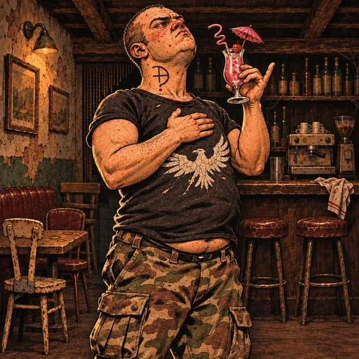
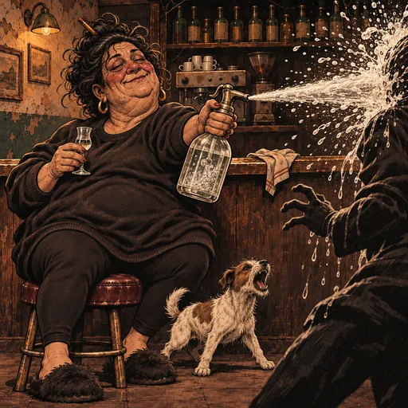
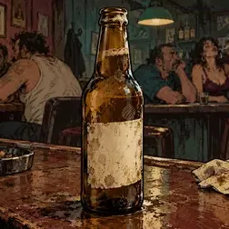
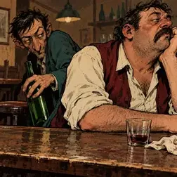
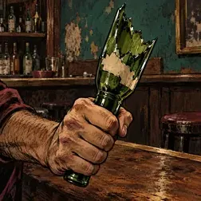

1 · bruiser.character.BigBadBruiser

Ogni figura è mostrata a 252 px e 60 px. Le tre candidate O9 sono tratte dall’atlante esistente. Il primo tentativo del token è stato rifiutato; la variante successiva è nella scheda delle correzioni.
Confronta le correzioni richieste





Rifiutato dallo strumento: nessuna immagine.


